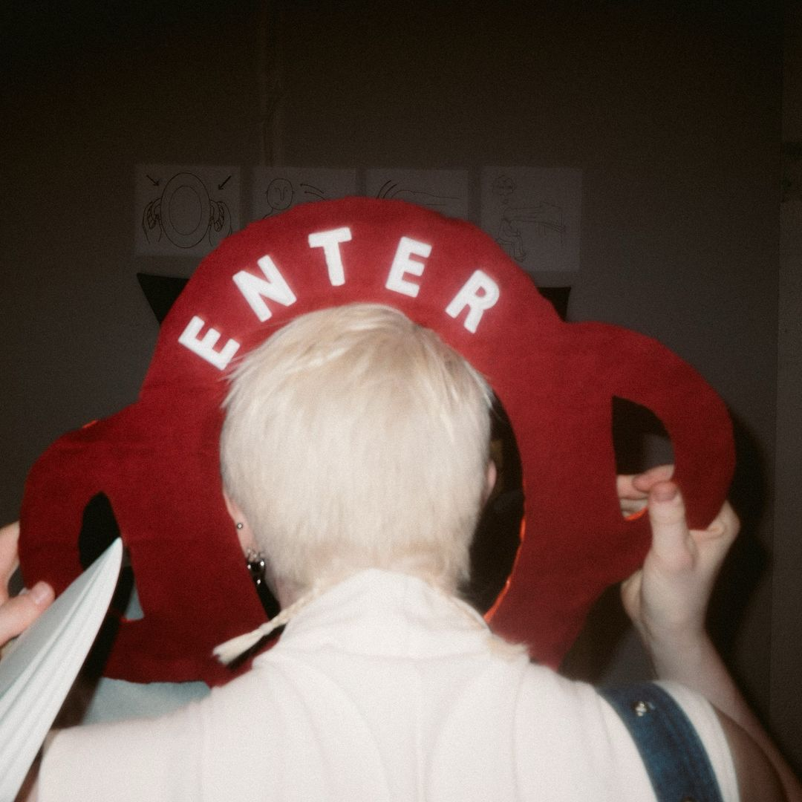

ENTER HERE (Pixelmouth)
This is a little install I did for @pixelmouthnyc called “A rose for @Emily7213_lol”
It’s an immersive viewing experience that dynamically switches between different real-time live streams worldwide while physically encapsulating you in the soft-sculpture. The portals transition between remote sea cameras, zoo animals, random backyards, ASMR, porn cams, MIT’s cafeteria, bomb watches in Gaza, UN meetings, mukbang channels, urban city streets, game shows, stock watches, and so SO much more. It also featured a security camera watching the viewer from a location within the gallery. (Check out the video from inside the portal)
This project highlights both the interconnectedness of our digital-age existence and the pervasive nature of modern surveillance. You are the observer and the observed. Thanks so much @tench.nology for getting me involved. It was such an honor and the show was fabulous ‚ò∫Ô∏è‚ù§Ô∏èüôè
ENTER HERE

SuperVitamin
My inspirations for “SuperVitamin” were: 1) an ex who would take a bunch of supplements at the same time (like a handful of 20 pills, AT ONCE!!) and 2) a time period where I was completely enthralled with online manifestation videos.
To manifest my dream job, I spent nearly an hour each morning listening to three back-to-back videos. Patience isn’t my virtue, so why not binge all these good vibes at once? That curiosity plunged me into YouTube’s manifestation rabbit hole, where you can manifest anything. Forget just the dream job—how about changing your eye color, winning the lottery, or nailing a backflip? The possibilities are endless, with countless frequencies and soothing voices guiding the way.
Use this tool as a menu, pick out everything you want to manifest and listen to the cacophony of your every desire.
Take Your Vitamins
Facebook Marketplace Mirrors
I was selling a mirror on @facebookmarketplace like a month ago and laughed at myself trying to take a picture of the mirror without capturing my reflection. I went through hundreds of listings of second hand mirrors, ran the images through an image expander, and these are some of the haunted favs. Silly little thing
Watch the Reel!
Musical Tie
Made a silly thing with a childrens toy i thrifted… thinking about dynamics between work and play// professional items and toys. id wear this if i was invited to a funeral for a musician. or maybe if i was a server at a bar with live jazz, and had to help the guitarist tune up (swanky style). anyway, i broke it..
See the Tie in Action!
Content 1
After a friend with covid jokingly told me to "worship her through
the screen," I thought about how I could make a shrine-like website
for her. I notortiously make websites and art projects for the
people in my life, so this was a fun challenge. This is my first
Node.js application! After uploading a photo, users generate a link
to their custom shrines, with buttons allowing you to worship them
harder and harder. This custom link is sharable with other people,
so they can worship you as well.
Build a shrine!
Content 2
This is a project I completed in a 300-level Introduction to
Computer Graphics class at Wellesley College. The entire project was
done in JavaScript, WebGL, and Three.js.
Click here
to see how you can interact with the environment using your
keyboard.

Content 3
WIP, two characters who are in love that speak to each other across
the browser. This is an experiment with dialogue and animation.
Current fixes needed: the speech is off. I realized you cannot have
text to speech for two popups going at the same time, so I tried to
improvise with some inputted audio files.
Enjoy the Show!
Content 3
This simple hands-free fingerpainting experience was implemented for
IAMB literary magazine's third issue, "NOSTALGIA." The interactive
landing page evokes a sense of childlike wonder, perfect for an
issue about the good old days.
Try Fingerpainting!
Content 3
This is a portfolio enhancer I designed using A-frame. Instead of
having so much text on my projects page, I decided to record casual
videos of myself discussing each one.
Try it now on my work page!

Content 3
I stopped posting casual selfies of myself on instagram once it
started turning into a page where I shared my freelance work and
personal projects. I'm not exactly sure why. The humorous side of me
likes to think it is because it is too easily accessible, and most
people do not deserve my awesome selfies. This led to "Engage with
Me," a series of steps you must complete before being deemed worthy
enough for an old picture of me.
Engage with Me
Content 3
I want the truth. Don't stray from the source. This diary entry
obfuscates more the further you are away from the place it was
written. The diary entry I wrote was based on my favorite song,
"Truisms for Dummies," by Headache.
Read my Diary
Content 3
I made a quick ML demo using the cocossd database to detect
bookcovers.
Content 3
Inspired by the dystopian smile detector Canon installed in their
Chinese offices (2021), I temporarily implemented browser-based
emotion tracking on my personal website. With Google Analytics, I
was able to see whether or not people were enjoying their time at
tina.zone..
Happy Test
Content 3
Inspired by Viviene Westwood's AR campaign for larger-than-life
jewelry in real space, I made a 3D model of one of En Route's
best-selling necklaces and got some early pics using meta spark for
a real-world world object placement. It's always good for me to have
some basic 3D modeling in my freelance practice.
Content 3
In an interview with a company, the CEO commented on my glasses and
how the lenses are different shapes. This was a cutesy project I put
together in a night.
Test my Vision!
Content 3
This was a simple magic-8 ball I made using my own head, designed to
have an old primitive style of animation. I still use this if I'm
unsure.
Try the Magic
Content 3
This was a birthday present I made for a friend going through a
breakup, urging them to remember that the love they've put out into
the universe exists inside them.
Love Meter
Content 3
Columbia University put on a play based on old alumnis tragic love
letters, and featured different artists from NYC. I was invited to
participate, and in addition to some live-coding visuals I did for
the performance, I also had this simple html/js animation
Watch Here
Content 3
This piece is meant to be funny and also experimental. It is about
how we may seem perfect on paper even if that could not be farther
from the truth. If you want to try this experience, make sure popups
and camera are turned on.
play with popups
Content 3
This piece was made a mockup for a cannabis deivery company, Doobie.
It is a great demo of places 3D assets into the real world.
hit my vape
Content 3
As an artist in resident, I live code visuals for lots of different
NYC bands.
Check them out!

Content 3
After discovering the trend of "deinfluencing," I decided to take a
stab at the consumerism problem. I noticed that because of how
convienient it has become to order things online, we are consuimg
much more than we need to. My simple solution to this is a chrome
extension I aptly named "Stop Buying Things." By detecting that you
are on a shopping cart page, the pop-up turns your browser window
red for a few seconds, then reminds you of its simple creed: STOP
BUYING THINGS! In the few seconds where your browser is totally red,
it will allow you to take a deep breath before truly considering if
you need to buy anything.
Content 3
What does the application do? What is its purpose?
This application is a additional skill practice program built for
english-speaking 2nd graders. Its purpose is to help students
improve their additional skills by encouraging them to get multiple
answers in a row. Users answer the displayed arithemic question,
which increases in difficulty every level. Users submit their answer
by pressing the submit button, or pressing the enter key on their
keyboard. If the user answers correctly, a new problem will be
random generated.
The number of currently consecutive answers is stored, and it is
displayed under "Current Streak" on the webpage. The users highest
streak for the session is also displayed, which is reset when the
page is refreshed/ a new session starts.
For every correctly answered question, the screen displays "Correct!
Great Job!" with an accompanying image of the original avatar, Mathy
the Adventure Cat, randoming displaying 1 of 3 positive emotions.
Every 10 correct consecutive answers is rewarded with unlocking a
new background.
When users enter incorrectly, the current streak is reset to 0, and
the question will not change until it is answer correctly. Mathy the
Adventure Cat is displayed as having a pensive, thinking face.
When users need help, they can press the help button in the top
right of the div container. This alerts the user of some ways to
help them solve the problem.
For users who have sight impairments or struggle with dyscalculia,
there is a speech-to-text toggle button displayed under the current
level.